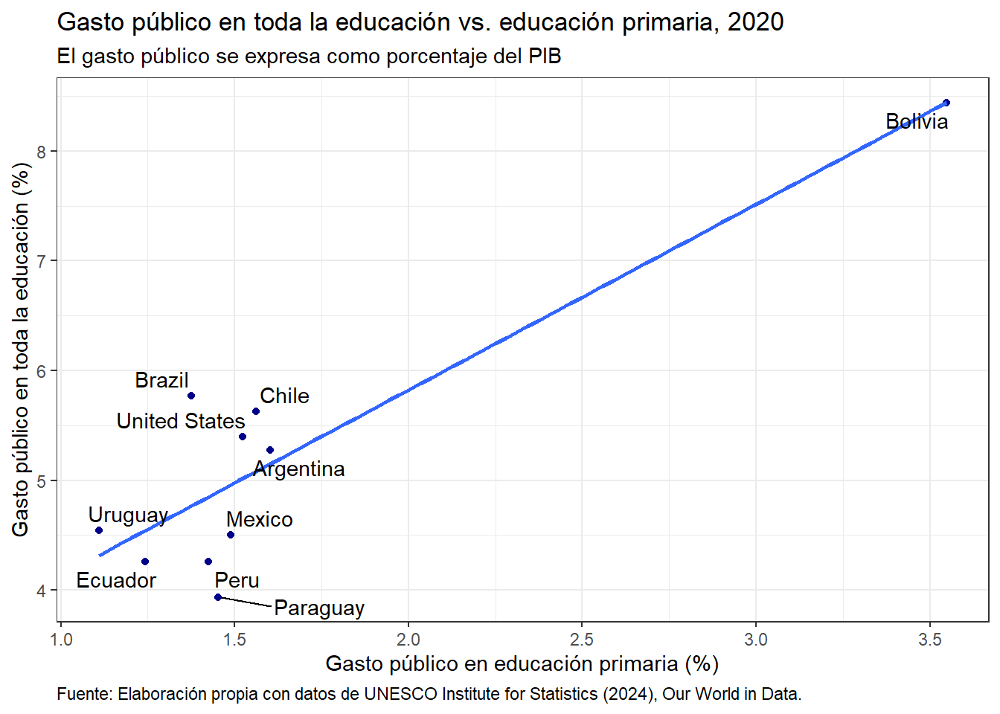
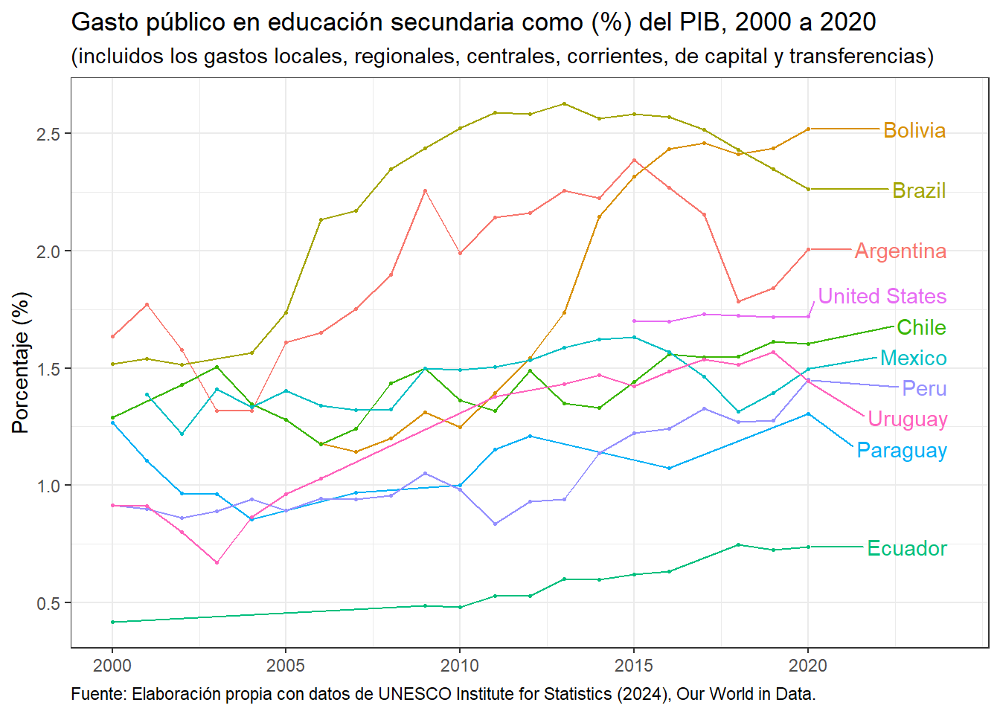

library(ggrepel)
library(tidyverse)Our_World_in_Data Graphics
Graphics
This document presents the process of creating the scatter plots and time series of Our World in Data information of education. You can download the data in the following link:
The first step is to load the following libraries:
Share of GDP spent on education
Load data
We fetch the data directly from the webpage:
# Fetch the data
df1 <- read.csv("https://ourworldindata.org/grapher/share-edu-spending-gdp-vs-share-edu-total-spending.csv?v=1&csvType=full&useColumnShortNames=true")
glimpse(df1)Rows: 5,817
Columns: 6
$ Entity <chr> …
$ Code <chr> …
$ Year <int> …
$ expenditure_on_education_as_a_percentage_of_total_government_expenditure__pct__xgovexp_imf <dbl> …
$ government_expenditure_on_education_as_a_percentage_of_gdp__pct__xgdp_fsgov <dbl> …
$ owid_region <chr> …Filtering
df1 = df1 |>
filter(Code %in% c("ARG", "BOL", "BRA", "CHL",
"COL", "ECU", "PRY", "PER",
"URY", "USA", "MEX")) |>
filter(Year == 2020)
as_tibble(df1)# A tibble: 11 × 6
Entity Code Year expenditure_on_educa…¹ government_expenditu…² owid_region
<chr> <chr> <int> <dbl> <dbl> <chr>
1 Argent… ARG 2020 12.4 5.28 ""
2 Bolivia BOL 2020 22.2 8.44 ""
3 Brazil BRA 2020 11.6 5.77 ""
4 Chile CHL 2020 19.4 5.63 ""
5 Colomb… COL 2020 NA 5.26 ""
6 Ecuador ECU 2020 10.6 4.26 ""
7 Mexico MEX 2020 16.2 4.50 ""
8 Paragu… PRY 2020 24.5 3.94 ""
9 Peru PER 2020 15.5 4.26 ""
10 United… USA 2020 12.7 5.40 ""
11 Uruguay URY 2020 13.9 4.54 ""
# ℹ abbreviated names:
# ¹expenditure_on_education_as_a_percentage_of_total_government_expenditure__pct__xgovexp_imf,
# ²government_expenditure_on_education_as_a_percentage_of_gdp__pct__xgdp_fsgovGraphic
df1 |>
ggplot(aes(x = government_expenditure_on_education_as_a_percentage_of_gdp__pct__xgdp_fsgov,
y = expenditure_on_education_as_a_percentage_of_total_government_expenditure__pct__xgovexp_imf)) +
geom_point(colour = "darkblue") +
geom_smooth(method = "lm", se = FALSE) +
geom_text_repel(label = df1$Entity) +
theme_bw() +
labs(title = "Porcentaje del PIB gastado en educación vs. porcentaje del gasto
asignado a educación, 2020",
subtitle = expression(atop("Gasto público general en educación (corriente, de capital y transferencias) expresado como",
"porcentaje del gasto público total en todos los sectores y como porcentaje del PIB")),
x = "Gasto en educación como (%) del PIB",
y = "Gasto en educación como (%) del gasto público",
caption = "Fuente: Elaboración propia con datos de UNESCO Institute for Statistics (2024), Our World in Data.") +
theme(plot.caption.position = "panel",
plot.caption = element_text(hjust = 0))
# Saving the plot
# ggsave(filename = "OWD1.pdf")Government expenditure on primary education
Load data
We fetch the data directly from the webpage:
# Fetch the data
df2 <- read.csv("https://ourworldindata.org/grapher/primary-edu-spending-vs-overall-edu-spending.csv?v=1&csvType=full&useColumnShortNames=true")
glimpse(df2)Rows: 5,610
Columns: 6
$ Entity <chr> …
$ Code <chr> …
$ Year <int> …
$ government_expenditure_on_education_as_a_percentage_of_gdp__pct__xgdp_fsgov <dbl> …
$ government_expenditure_on_primary_education_as_a_percentage_of_gdp__pct <dbl> …
$ owid_region <chr> …Filtering
df2 = df2 |>
filter(Code %in% c("ARG", "BOL", "BRA", "CHL",
"COL", "ECU", "PRY", "PER",
"URY", "USA", "MEX")) |>
filter(Year == 2020)
as_tibble(df2)# A tibble: 11 × 6
Entity Code Year government_expenditu…¹ government_expenditu…² owid_region
<chr> <chr> <int> <dbl> <dbl> <chr>
1 Argent… ARG 2020 5.28 1.60 ""
2 Bolivia BOL 2020 8.44 3.55 ""
3 Brazil BRA 2020 5.77 1.38 ""
4 Chile CHL 2020 5.63 1.56 ""
5 Colomb… COL 2020 5.26 NA ""
6 Ecuador ECU 2020 4.26 1.24 ""
7 Mexico MEX 2020 4.50 1.49 ""
8 Paragu… PRY 2020 3.94 1.45 ""
9 Peru PER 2020 4.26 1.42 ""
10 United… USA 2020 5.40 1.52 ""
11 Uruguay URY 2020 4.54 1.11 ""
# ℹ abbreviated names:
# ¹government_expenditure_on_education_as_a_percentage_of_gdp__pct__xgdp_fsgov,
# ²government_expenditure_on_primary_education_as_a_percentage_of_gdp__pctGraphic
df2 |>
ggplot(aes(x = government_expenditure_on_primary_education_as_a_percentage_of_gdp__pct,
y = government_expenditure_on_education_as_a_percentage_of_gdp__pct__xgdp_fsgov)) +
geom_point(colour = "darkblue") +
geom_smooth(method = "lm", se = FALSE) +
geom_text_repel(label = df2$Entity) +
theme_bw() +
labs(title = "Gasto público en toda la educación vs. educación primaria, 2020",
subtitle = "El gasto público se expresa como porcentaje del PIB",
x = "Gasto público en educación primaria (%)",
y = "Gasto público en toda la educación (%)",
caption = "Fuente: Elaboración propia con datos de UNESCO Institute for Statistics (2024), Our World in Data.") +
theme(plot.caption.position = "panel",
plot.caption = element_text(hjust = 0))
# Saving the plot
# ggsave(filename = "OWD2.pdf")Government expenditure on secondary education
Load data
We fetch the data directly from the webpage:
# Fetch the data
df3 <- read.csv("https://ourworldindata.org/grapher/government-expenditure-on-secondary-education-as-share-of-gdp.csv?v=1&csvType=full&useColumnShortNames=true")
glimpse(df3)Rows: 3,691
Columns: 4
$ Entity <chr> …
$ Code <chr> …
$ Year <int> …
$ government_expenditure_on_secondary_education_as_a_percentage_of_gdp__pct <dbl> …Filtering
df3 = df3 |>
filter(Code %in% c("ARG", "BOL", "BRA", "CHL",
"COL", "ECU", "PRY", "PER",
"URY", "USA", "MEX")) |>
filter(Year >= 2000 & Year <= 2020)
as_tibble(df3)# A tibble: 162 × 4
Entity Code Year government_expenditure_on_secondary_education_as_a_pe…¹
<chr> <chr> <int> <dbl>
1 Argentina ARG 2000 1.64
2 Argentina ARG 2001 1.77
3 Argentina ARG 2002 1.58
4 Argentina ARG 2003 1.32
5 Argentina ARG 2004 1.32
6 Argentina ARG 2005 1.61
7 Argentina ARG 2006 1.65
8 Argentina ARG 2007 1.75
9 Argentina ARG 2008 1.90
10 Argentina ARG 2009 2.26
# ℹ 152 more rows
# ℹ abbreviated name:
# ¹government_expenditure_on_secondary_education_as_a_percentage_of_gdp__pctGraphic
Before doing the graph, we need to create a data frame to set unique labels in the final graph:
countries = df3 |>
group_by(Entity) |> filter(Year == max(Year))Now we create the graph:
df3 |>
ggplot(aes(x = Year,
y = government_expenditure_on_secondary_education_as_a_percentage_of_gdp__pct,
colour = Entity,
label = Entity)) +
geom_line() +
geom_point(size = 0.5) +
geom_text_repel(data = countries,
nudge_x = 4,
direction = "y",
hjust = "right") +
expand_limits(x = max(df3$Year) + 2.5) +
guides(colour = FALSE) +
scale_x_continuous(breaks = seq(2000, 2020, by = 5)) +
scale_y_continuous(breaks = seq(0, 3, by = 0.5)) +
theme_bw() +
labs(title = "Gasto público en educación secundaria como (%) del PIB, 2000 a 2020",
subtitle = "(incluidos los gastos locales, regionales, centrales, corrientes, de capital y transferencias)",
y = "Porcentaje (%)",
caption = "Fuente: Elaboración propia con datos de UNESCO Institute for Statistics (2024), Our World in Data.") +
theme(plot.caption.position = "panel",
plot.caption = element_text(hjust = 0),
axis.title.x = element_blank())
# Saving the plot
# ggsave(filename = "OWD4.pdf")Government expenditure on education - regions
Load data
We fetch the data directly from the webpage:
# Fetch the data
df4 <- read.csv("https://ourworldindata.org/grapher/total-government-expenditure-on-education-gdp.csv?v=1&csvType=full&useColumnShortNames=true")
glimpse(df4)Rows: 5,676
Columns: 4
$ Entity <chr> "Afghanistan", "Afghanistan", "Afghanistan", "Afg…
$ Code <chr> "AFG", "AFG", "AFG", "AFG", "AFG", "AFG", "AFG", …
$ Year <int> 2006, 2007, 2008, 2009, 2010, 2011, 2012, 2013, 2…
$ combined_expenditure <dbl> 4.684761, 4.174895, 4.383672, 4.810640, 3.479450,…Filtering
df4 = df4 |>
filter(Entity %in% c("Europe and Central Asia (WB)",
"Latin America and Caribbean (WB)",
"North America (WB)")) |>
filter(Year >= 2000 & Year <= 2022)
as_tibble(df4)# A tibble: 68 × 4
Entity Code Year combined_expenditure
<chr> <chr> <int> <dbl>
1 Europe and Central Asia (WB) "" 2000 4.39
2 Europe and Central Asia (WB) "" 2001 4.65
3 Europe and Central Asia (WB) "" 2002 4.53
4 Europe and Central Asia (WB) "" 2003 5.04
5 Europe and Central Asia (WB) "" 2004 4.83
6 Europe and Central Asia (WB) "" 2005 4.93
7 Europe and Central Asia (WB) "" 2006 4.91
8 Europe and Central Asia (WB) "" 2007 4.63
9 Europe and Central Asia (WB) "" 2008 4.84
10 Europe and Central Asia (WB) "" 2009 4.97
# ℹ 58 more rowsGraphic
Now we create the graph:
four = 4.0 # Baseline
df4 |>
ggplot(aes(x = Year,
y = combined_expenditure,
colour = Entity)) +
geom_line() +
geom_point(size = 0.5) +
geom_hline(yintercept = four, color = "black", linetype = 2) +
scale_x_continuous(breaks = seq(2000, 2022, by = 5)) +
theme_bw() +
labs(title = "Gasto público en educación como (%) del PIB, 2000 a 2022",
subtitle = "(todos los niveles de gobierno y todos los niveles de educación)",
y = "Porcentaje (%)",
caption = "Fuente: Elaboración propia con datos de World Bank (2024); Tanzi & Schuknecht (2000), Our World in Data.") +
theme(plot.caption.position = "panel",
plot.caption = element_text(hjust = 0),
legend.position = "bottom",
axis.title.x = element_blank())# Saving the plot
# ggsave(filename = "OWD1.pdf")Average performance of 15-year-old girls and boys in mathematics, 2022
Load data
We fetch the data directly from the webpage:
# Fetch the data
df5 <- read.csv("https://ourworldindata.org/grapher/pisa-mean-performance-on-the-mathematics-scale-by-sex.csv?v=1&csvType=full&useColumnShortNames=true")
glimpse(df5)Rows: 59,225
Columns: 7
$ Entity <chr> "Afghanistan", "Afghanistan", "Afghanistan", "…
$ Code <chr> "AFG", "AFG", "AFG", "AFG", "AFG", "AFG", "AFG…
$ Year <int> -10000, -9000, -8000, -7000, -6000, -5000, -40…
$ pisa_math_average_girls <dbl> NA, NA, NA, NA, NA, NA, NA, NA, NA, NA, NA, NA…
$ pisa_math_average_boys <dbl> NA, NA, NA, NA, NA, NA, NA, NA, NA, NA, NA, NA…
$ population_historical <dbl> 14737, 20405, 28253, 39120, 54166, 75000, 3062…
$ owid_region <chr> "", "", "", "", "", "", "", "", "", "", "", ""…Filtering
Because the lack of information we exclude Bolivia and Ecuador
df5 = df5 |>
filter(Code %in% c("ARG", "BRA", "CHL",
"COL", "PRY", "PER",
"URY", "USA", "MEX")) |>
filter(Year == 2022)
as_tibble(df5)# A tibble: 9 × 7
Entity Code Year pisa_math_average_girls pisa_math_average_boys
<chr> <chr> <int> <dbl> <dbl>
1 Argentina ARG 2022 372. 383.
2 Brazil BRA 2022 375. 383.
3 Chile CHL 2022 403. 420.
4 Colombia COL 2022 378. 387.
5 Mexico MEX 2022 389. 401.
6 Paraguay PRY 2022 332. 343.
7 Peru PER 2022 384. 399.
8 United States USA 2022 458. 471.
9 Uruguay URY 2022 403. 414.
# ℹ 2 more variables: population_historical <dbl>, owid_region <chr>Graphic
df5 |>
ggplot(aes(x = pisa_math_average_boys,
y = pisa_math_average_girls,
colour = Entity,
size = population_historical)) +
geom_point(alpha = 0.5) +
geom_abline(linetype = 2) +
geom_text_repel(label = df5$Entity) +
theme_bw() +
labs(x = "Niños (puntuación)",
y = "Niñas (puntuación)") +
labs(title = "Rendimiento promedio de niñas y niños de 15 años en matemáticas, 2022",
subtitle = "Evaluado a través de la escala de matemáticas PISA",
x = "Niños (puntuación)",
y = "Niñas (puntuación)",
caption = "Fuente: Elaboración propia con datos de OECD (2023), Our World in Data.") +
theme(plot.caption.position = "panel",
plot.caption = element_text(hjust = 0),
legend.position = "none")# Saving the plot
# ggsave(filename = "OWD5.pdf")Average performance of 15-year-old girls and boys in sciences, 2022
Load data
We fetch the data directly from the webpage:
# Fetch the data
df6 <- read.csv("https://ourworldindata.org/grapher/average-performance-of-15-year-old-girls-and-boys-on-the-science-scale.csv?v=1&csvType=full&useColumnShortNames=true")
glimpse(df6)Rows: 78,935
Columns: 7
$ Entity <chr> "Afghanistan", "Afghanistan", "Afghanistan"…
$ Code <chr> "AFG", "AFG", "AFG", "AFG", "AFG", "AFG", "…
$ Year <int> -10000, -9000, -8000, -7000, -6000, -5000, …
$ pisa_science_average_girls <dbl> NA, NA, NA, NA, NA, NA, NA, NA, NA, NA, NA,…
$ pisa_science_average_boys <dbl> NA, NA, NA, NA, NA, NA, NA, NA, NA, NA, NA,…
$ population <dbl> 14737, 20405, 28253, 39120, 54166, 75000, 3…
$ owid_region <chr> "", "", "", "", "", "", "", "", "", "", "",…Filtering
Because the lack of information we exclude Bolivia and Ecuador:
df6 = df6 |>
filter(Code %in% c("ARG", "BRA", "CHL",
"COL", "PRY", "PER",
"URY", "USA", "MEX")) |>
filter(Year == 2022)
as_tibble(df6)# A tibble: 9 × 7
Entity Code Year pisa_science_average…¹ pisa_science_average…² population
<chr> <chr> <int> <dbl> <dbl> <dbl>
1 Argentina ARG 2022 403. 409. 45407866
2 Brazil BRA 2022 400. 406. 210306358
3 Chile CHL 2022 436. 450. 19552984
4 Colombia COL 2022 408. 414. 51737891
5 Mexico MEX 2022 404. 417. 128613066
6 Paraguay PRY 2022 367. 370. 6760399
7 Peru PER 2022 401. 415. 33475381
8 United S… USA 2022 496. 503. 341533996
9 Uruguay URY 2022 431. 440. 3390863
# ℹ abbreviated names: ¹pisa_science_average_girls, ²pisa_science_average_boys
# ℹ 1 more variable: owid_region <chr>Graphic
df6 |>
ggplot(aes(x = pisa_science_average_boys,
y = pisa_science_average_girls,
colour = Entity,
size = population)) +
geom_point(alpha = 0.5) +
geom_abline(linetype = 2) +
geom_text_repel(label = df6$Entity) +
theme_bw() +
labs(title = "Rendimiento promedio de niñas y niños de 15 años en ciencias, 2022",
subtitle = "Evaluado a través de la escala de ciencias PISA",
x = "Niños (puntuación)",
y = "Niñas (puntuación)",
caption = "Fuente: Elaboración propia con datos de OECD (2023), Our World in Data.") +
theme(plot.caption.position = "panel",
plot.caption = element_text(hjust = 0),
legend.position = "none")# Saving the plot
# ggsave(filename = "OWD6.pdf")Average performance of 15-year-old girls and boys in reading, 2022
Load data
We fetch the data directly from the webpage:
# Fetch the data
df7 <- read.csv("https://ourworldindata.org/grapher/pisa-mean-performance-on-the-reading-scale-by-sex.csv?v=1&csvType=full&useColumnShortNames=true")
glimpse(df7)Rows: 59,227
Columns: 7
$ Entity <chr> "Afghanistan", "Afghanistan", "Afghanistan"…
$ Code <chr> "AFG", "AFG", "AFG", "AFG", "AFG", "AFG", "…
$ Year <int> -10000, -9000, -8000, -7000, -6000, -5000, …
$ pisa_reading_average_girls <dbl> NA, NA, NA, NA, NA, NA, NA, NA, NA, NA, NA,…
$ pisa_reading_average_boys <dbl> NA, NA, NA, NA, NA, NA, NA, NA, NA, NA, NA,…
$ population_historical <dbl> 14737, 20405, 28253, 39120, 54166, 75000, 3…
$ owid_region <chr> "", "", "", "", "", "", "", "", "", "", "",…Filtering
Because the lack of information we exclude Bolivia and Ecuador:
df7 = df7 |>
filter(Code %in% c("ARG", "BRA", "CHL",
"COL", "PRY", "PER",
"URY", "USA", "MEX")) |>
filter(Year == 2022)
as_tibble(df7)# A tibble: 9 × 7
Entity Code Year pisa_reading_average_girls pisa_reading_average_boys
<chr> <chr> <int> <dbl> <dbl>
1 Argentina ARG 2022 408. 394.
2 Brazil BRA 2022 419. 402.
3 Chile CHL 2022 451. 445.
4 Colombia COL 2022 414. 403.
5 Mexico MEX 2022 419. 411.
6 Paraguay PRY 2022 382. 364.
7 Peru PER 2022 412. 404.
8 United States USA 2022 515. 493.
9 Uruguay URY 2022 438. 423.
# ℹ 2 more variables: population_historical <dbl>, owid_region <chr>Graphic
df7 |>
ggplot(aes(x = pisa_reading_average_boys,
y = pisa_reading_average_girls,
colour = Entity,
size = population_historical)) +
geom_point(alpha = 0.5) +
geom_abline(linetype = 2) +
geom_text_repel(label = df7$Entity) +
theme_bw() +
labs(title = "Rendimiento promedio de niñas y niños de 15 años en lectura, 2022",
subtitle = "Evaluado a través de la escala de lectura PISA",
x = "Niños (puntuación)",
y = "Niñas (puntuación)",
caption = "Fuente: Elaboración propia con datos de OECD (2023), Our World in Data.") +
theme(plot.caption.position = "panel",
plot.caption = element_text(hjust = 0),
legend.position = "none")# Saving the plot
# ggsave(filename = "OWD7.pdf")